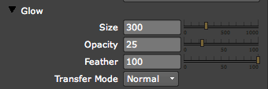
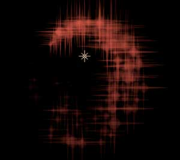
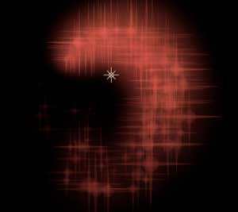
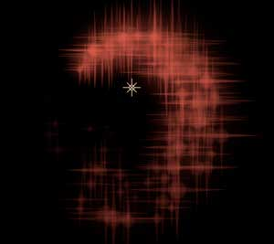
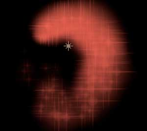
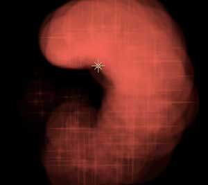
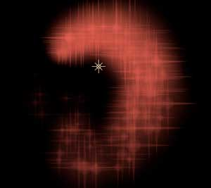
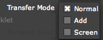
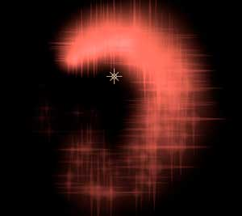
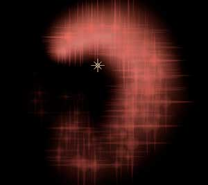

Particle tab> Glow group
The Glow group adjusts the glow properties for the Glow and Star particle types. This control is only active when Glow Sphere or Star are chosen as the Particle Type.

The Glow group.
Size
Sets the size of the glow in pixels. High values will cover a greater area around each particle. Lower values will cover a small area and appear dimmer or less prominent.

Glow Size is set low and the glow is not very visible.

Glow Size is set to a high value. The glow is much more visible.
Opacity
Sets the opacity of the glow. The maximum value is 100 and will give the glow or star particle a solid outline. Lower values give a more transparent glow.
 
At left, Opacity is low, making the stars distinct and giving the particles a small halo. At right, Opacity is high, which makes the stars' glow very prominent.
Feather
Sets the softness of the glow. The default value of 100 will create soft feathered edge to the particle. Lower values give a more solid edge to the sphere or start shapes.
 
At left, when Feather is low, it is easy to see the edge of the glow area. At right, when Feather is high, the edge of the glow area is diffuse and difficult to detect.
Transfer Mode
The Transfer Mode options controls how the glow is composited with the Glow Sphere and Star particles. T

There are three Transfer Mode options for Glow:
Normal |
The normal composite mode simply applies the glow area over top of the particle. This is the default mode. |
|
Add |
In this mode the glow is added on top of the particles causing a much brighter result. This mode is useful for creating the appearance of sparks or fire flies. Set the Opacity lower to control the brightness of the glow. |
|
Screen |
In this mode the screen compositing mode is used to composite the glow on top of the glow sphere or star. The screen mode brightens the glow effect but will not create a burnt out appearance as seen in the add mode. |
 
Left to right, the Transfer Mode set to Normal, Add and Screen.